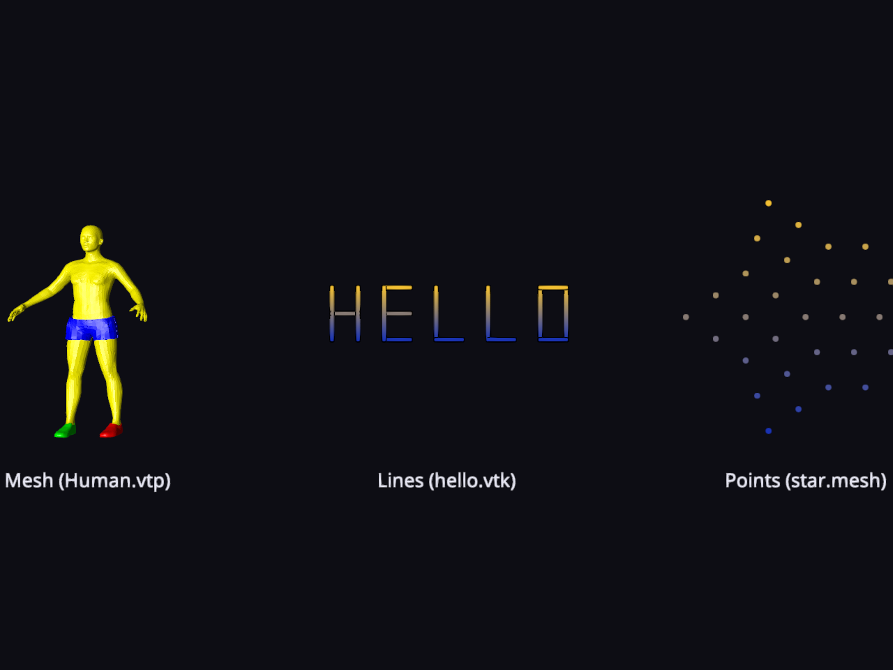

Note
Go to the end to download the full example code.
Reading Meshes, Lines, and Points#
This example demonstrates how to fetch 3D data assets from the
polyxios-data repository, read them into NumPy arrays using FURY’s
dedicated I/O methods, and render them as distinct colored actors side by side:
a surface mesh, a collection of lines, and a point cloud.
Polyxios is the lightweight, dependency-free I/O backend used by FURY. It
is designed to auto-detect file formats by extension and map complex scientific
surface structures (.vtk, .vtp, .ply, .obj, .mesh)
seamlessly into memory-contiguous NumPy arrays, and its fetch helper downloads
and caches sample assets so tutorials and tests can run without bundling large files.
This example highlights three fundamental data archetypes:
Surface Meshes (via ``read_mesh``): Returns a triple of
(vertices, faces, colors)whereverticesis an(N, 3)float32 array,facesis an(M, 3)int32 array of triangulated indices, andcolorsis an optional(N, 3)float32 color map.Line Streams (via ``read_lines``): Returns a tuple of
(lines, colors). Here,linesis a list of independent(P, 3)float32 arrays (where each array represents an individual continuous stroke or fiber pathway), andcolorscontains a corresponding list of per-vertex color maps.Point Clouds (via ``read_points``): Returns a tuple of
(points, colors)wherepointsis an(N, 3)float32 coordinate block representing un-connected point data, andcolorsis an optional per-point attribute array.
Import the required libraries.
import numpy as np
import polyxios as px
from fury import actor, ui, window
from fury.io import read_lines, read_mesh, read_points
Define helper to process geometry, normalize space, and apply fallback gradients.
def points_to_actor(file_path):
"""Read a point cloud file and build a colored point actor."""
points, colors = read_points(file_path)
if points.size == 0:
raise ValueError(f"No points found in file: {file_path}")
# Center on the origin and normalize the scale to roughly unit size
points = points - points.mean(axis=0)
points = (points / np.max(np.abs(points))).astype(np.float32)
# Use the file's colors when present, otherwise apply a height-based gradient
if colors is None:
height = points[:, 1]
height_range = height.max() - height.min()
y_range = height_range if height_range > 0 else 1.0
t = ((height - height.min()) / y_range)[:, None]
low_color = np.array([0.10, 0.20, 0.70], dtype=np.float32)
high_color = np.array([0.95, 0.75, 0.20], dtype=np.float32)
colors = (low_color * (1.0 - t) + high_color * t).astype(np.float32)
# ``actor.point`` turns an (N, 3) array of point positions and their
# matching per-point colors into an optimized graphic object.
point_actor = actor.point(points, colors=colors)
return point_actor, len(points)
def lines_to_actor(file_path):
"""Read a lines file and build a colored stream/line actor."""
lines, colors = read_lines(file_path)
if not lines:
raise ValueError(f"No line elements found in file: {file_path}")
# Stack all points temporarily to calculate overall centering and scaling metrics
all_points = np.vstack(lines)
center = all_points.mean(axis=0)
max_scale = np.max(np.abs(all_points - center))
# Center on the origin and normalize the scale to roughly unit size
normalized_lines = [
((line - center) / max_scale).astype(np.float32) for line in lines
]
# Use the file's colors when present, otherwise apply a height-based gradient
if colors is None:
# Re-stack lines to compute a global bounding box for the height gradient
all_norm_points = np.vstack(normalized_lines)
y_min = all_norm_points[:, 1].min()
y_max = all_norm_points[:, 1].max()
y_range = y_max - y_min if (y_max - y_min) > 0 else 1.0
low_color = np.array([0.10, 0.20, 0.70], dtype=np.float32)
high_color = np.array([0.95, 0.75, 0.20], dtype=np.float32)
colors = []
for line in normalized_lines:
heights = line[:, 1]
t = ((heights - y_min) / y_range)[:, None]
line_colors = (low_color * (1.0 - t) + high_color * t).astype(np.float32)
colors.append(line_colors)
# ``actor.streamlines`` accepts a list of coordinate arrays and color arrays
line_actor = actor.streamlines(normalized_lines, colors=colors)
# Calculate totals for reporting
total_vertices = sum(len(line) for line in lines)
total_lines = len(lines)
return line_actor, total_vertices, total_lines
def mesh_to_actor(file_path):
"""Read a mesh file and build a colored surface actor."""
vertices, faces, colors = read_mesh(file_path)
# Center on the origin and normalize the scale to roughly unit size.
vertices = vertices - vertices.mean(axis=0)
vertices = (vertices / np.max(np.abs(vertices))).astype(np.float32)
# Use the file's colors when present, otherwise a height-based gradient.
if colors is None:
height = vertices[:, 1]
t = ((height - height.min()) / (height.max() - height.min()))[:, None]
low_color = np.array([0.10, 0.20, 0.70], dtype=np.float32)
high_color = np.array([0.95, 0.75, 0.20], dtype=np.float32)
colors = (low_color * (1.0 - t) + high_color * t).astype(np.float32)
# ``actor.surface`` wraps the geometry, material and mesh creation for us,
# turning the vertices, faces and per-vertex colors into a ready actor.
surf = actor.surface(vertices, faces, colors=colors)
return surf, len(vertices), len(faces)
Fetch the sample data assets via polyxios.
Human.vtpa surface mesh possessing native topological faces and color tracks.hello.vtkcontains line elements forming spatial lettering out of poly-line.star.meshhandles plain point coordinates lacking explicitly structured links.
human_path = px.fetch("Human.vtp")
line_path = px.fetch("hello.vtk")
ball_path = px.fetch("star.mesh")
# Generate the actors and fetch metadata counts
mesh_actor, mesh_nv, mesh_nf = mesh_to_actor(human_path)
line_actor, line_nv, line_nl = lines_to_actor(line_path)
point_actor, point_nv = points_to_actor(ball_path)
print(f"Human.vtp (Mesh): {mesh_nv} vertices, {mesh_nf} faces")
print(f"hello.vtk (Lines): {line_nv} vertices across {line_nl} lines")
print(f"star.mesh (Points): {point_nv} points")
Fetching vtp.zip: [#-----------------------------] 5.2%
Fetching vtp.zip: [###---------------------------] 10.3%
Fetching vtp.zip: [####--------------------------] 15.5%
Fetching vtp.zip: [######------------------------] 20.6%
Fetching vtp.zip: [#######-----------------------] 25.8%
Fetching vtp.zip: [#########---------------------] 31.0%
Fetching vtp.zip: [##########--------------------] 36.1%
Fetching vtp.zip: [############------------------] 41.3%
Fetching vtp.zip: [#############-----------------] 46.4%
Fetching vtp.zip: [###############---------------] 51.6%
Fetching vtp.zip: [#################-------------] 56.8%
Fetching vtp.zip: [##################------------] 61.9%
Fetching vtp.zip: [####################----------] 67.1%
Fetching vtp.zip: [#####################---------] 72.2%
Fetching vtp.zip: [#######################-------] 77.4%
Fetching vtp.zip: [########################------] 82.6%
Fetching vtp.zip: [##########################----] 87.7%
Fetching vtp.zip: [###########################---] 92.9%
Fetching vtp.zip: [#############################-] 98.0%
Fetching vtp.zip: [##############################] 100.0%
Fetching vtk.zip: [------------------------------] 0.6%
Fetching vtk.zip: [------------------------------] 1.2%
Fetching vtk.zip: [------------------------------] 1.8%
Fetching vtk.zip: [------------------------------] 2.4%
Fetching vtk.zip: [------------------------------] 2.9%
Fetching vtk.zip: [#-----------------------------] 3.5%
Fetching vtk.zip: [#-----------------------------] 4.1%
Fetching vtk.zip: [#-----------------------------] 4.7%
Fetching vtk.zip: [#-----------------------------] 5.3%
Fetching vtk.zip: [#-----------------------------] 5.9%
Fetching vtk.zip: [#-----------------------------] 6.5%
Fetching vtk.zip: [##----------------------------] 7.1%
Fetching vtk.zip: [##----------------------------] 7.7%
Fetching vtk.zip: [##----------------------------] 8.3%
Fetching vtk.zip: [##----------------------------] 8.8%
Fetching vtk.zip: [##----------------------------] 9.4%
Fetching vtk.zip: [###---------------------------] 10.0%
Fetching vtk.zip: [###---------------------------] 10.6%
Fetching vtk.zip: [###---------------------------] 11.2%
Fetching vtk.zip: [###---------------------------] 11.8%
Fetching vtk.zip: [###---------------------------] 12.4%
Fetching vtk.zip: [###---------------------------] 13.0%
Fetching vtk.zip: [####--------------------------] 13.6%
Fetching vtk.zip: [####--------------------------] 14.1%
Fetching vtk.zip: [####--------------------------] 14.7%
Fetching vtk.zip: [####--------------------------] 15.3%
Fetching vtk.zip: [####--------------------------] 15.9%
Fetching vtk.zip: [####--------------------------] 16.5%
Fetching vtk.zip: [#####-------------------------] 17.1%
Fetching vtk.zip: [#####-------------------------] 17.7%
Fetching vtk.zip: [#####-------------------------] 18.3%
Fetching vtk.zip: [#####-------------------------] 18.9%
Fetching vtk.zip: [#####-------------------------] 19.4%
Fetching vtk.zip: [######------------------------] 20.0%
Fetching vtk.zip: [######------------------------] 20.6%
Fetching vtk.zip: [######------------------------] 21.2%
Fetching vtk.zip: [######------------------------] 21.8%
Fetching vtk.zip: [######------------------------] 22.4%
Fetching vtk.zip: [######------------------------] 23.0%
Fetching vtk.zip: [#######-----------------------] 23.6%
Fetching vtk.zip: [#######-----------------------] 24.2%
Fetching vtk.zip: [#######-----------------------] 24.8%
Fetching vtk.zip: [#######-----------------------] 25.3%
Fetching vtk.zip: [#######-----------------------] 25.9%
Fetching vtk.zip: [#######-----------------------] 26.5%
Fetching vtk.zip: [########----------------------] 27.1%
Fetching vtk.zip: [########----------------------] 27.7%
Fetching vtk.zip: [########----------------------] 28.3%
Fetching vtk.zip: [########----------------------] 28.9%
Fetching vtk.zip: [########----------------------] 29.5%
Fetching vtk.zip: [#########---------------------] 30.1%
Fetching vtk.zip: [#########---------------------] 30.6%
Fetching vtk.zip: [#########---------------------] 31.2%
Fetching vtk.zip: [#########---------------------] 31.8%
Fetching vtk.zip: [#########---------------------] 32.4%
Fetching vtk.zip: [#########---------------------] 33.0%
Fetching vtk.zip: [##########--------------------] 33.6%
Fetching vtk.zip: [##########--------------------] 34.2%
Fetching vtk.zip: [##########--------------------] 34.8%
Fetching vtk.zip: [##########--------------------] 35.4%
Fetching vtk.zip: [##########--------------------] 35.9%
Fetching vtk.zip: [##########--------------------] 36.5%
Fetching vtk.zip: [###########-------------------] 37.1%
Fetching vtk.zip: [###########-------------------] 37.7%
Fetching vtk.zip: [###########-------------------] 38.3%
Fetching vtk.zip: [###########-------------------] 38.9%
Fetching vtk.zip: [###########-------------------] 39.5%
Fetching vtk.zip: [############------------------] 40.1%
Fetching vtk.zip: [############------------------] 40.7%
Fetching vtk.zip: [############------------------] 41.3%
Fetching vtk.zip: [############------------------] 41.8%
Fetching vtk.zip: [############------------------] 42.4%
Fetching vtk.zip: [############------------------] 43.0%
Fetching vtk.zip: [#############-----------------] 43.6%
Fetching vtk.zip: [#############-----------------] 44.2%
Fetching vtk.zip: [#############-----------------] 44.8%
Fetching vtk.zip: [#############-----------------] 45.4%
Fetching vtk.zip: [#############-----------------] 46.0%
Fetching vtk.zip: [#############-----------------] 46.6%
Fetching vtk.zip: [##############----------------] 47.1%
Fetching vtk.zip: [##############----------------] 47.7%
Fetching vtk.zip: [##############----------------] 48.3%
Fetching vtk.zip: [##############----------------] 48.9%
Fetching vtk.zip: [##############----------------] 49.5%
Fetching vtk.zip: [###############---------------] 50.1%
Fetching vtk.zip: [###############---------------] 50.7%
Fetching vtk.zip: [###############---------------] 51.3%
Fetching vtk.zip: [###############---------------] 51.9%
Fetching vtk.zip: [###############---------------] 52.4%
Fetching vtk.zip: [###############---------------] 53.0%
Fetching vtk.zip: [################--------------] 53.6%
Fetching vtk.zip: [################--------------] 54.2%
Fetching vtk.zip: [################--------------] 54.8%
Fetching vtk.zip: [################--------------] 55.4%
Fetching vtk.zip: [################--------------] 56.0%
Fetching vtk.zip: [################--------------] 56.6%
Fetching vtk.zip: [#################-------------] 57.2%
Fetching vtk.zip: [#################-------------] 57.8%
Fetching vtk.zip: [#################-------------] 58.3%
Fetching vtk.zip: [#################-------------] 58.9%
Fetching vtk.zip: [#################-------------] 59.5%
Fetching vtk.zip: [##################------------] 60.1%
Fetching vtk.zip: [##################------------] 60.7%
Fetching vtk.zip: [##################------------] 61.3%
Fetching vtk.zip: [##################------------] 61.9%
Fetching vtk.zip: [##################------------] 62.5%
Fetching vtk.zip: [##################------------] 63.1%
Fetching vtk.zip: [###################-----------] 63.6%
Fetching vtk.zip: [###################-----------] 64.2%
Fetching vtk.zip: [###################-----------] 64.8%
Fetching vtk.zip: [###################-----------] 65.4%
Fetching vtk.zip: [###################-----------] 66.0%
Fetching vtk.zip: [###################-----------] 66.6%
Fetching vtk.zip: [####################----------] 67.2%
Fetching vtk.zip: [####################----------] 67.8%
Fetching vtk.zip: [####################----------] 68.4%
Fetching vtk.zip: [####################----------] 68.9%
Fetching vtk.zip: [####################----------] 69.5%
Fetching vtk.zip: [#####################---------] 70.1%
Fetching vtk.zip: [#####################---------] 70.7%
Fetching vtk.zip: [#####################---------] 71.3%
Fetching vtk.zip: [#####################---------] 71.9%
Fetching vtk.zip: [#####################---------] 72.5%
Fetching vtk.zip: [#####################---------] 73.1%
Fetching vtk.zip: [######################--------] 73.7%
Fetching vtk.zip: [######################--------] 74.3%
Fetching vtk.zip: [######################--------] 74.8%
Fetching vtk.zip: [######################--------] 75.4%
Fetching vtk.zip: [######################--------] 76.0%
Fetching vtk.zip: [######################--------] 76.6%
Fetching vtk.zip: [#######################-------] 77.2%
Fetching vtk.zip: [#######################-------] 77.8%
Fetching vtk.zip: [#######################-------] 78.4%
Fetching vtk.zip: [#######################-------] 79.0%
Fetching vtk.zip: [#######################-------] 79.6%
Fetching vtk.zip: [########################------] 80.1%
Fetching vtk.zip: [########################------] 80.7%
Fetching vtk.zip: [########################------] 81.3%
Fetching vtk.zip: [########################------] 81.9%
Fetching vtk.zip: [########################------] 82.5%
Fetching vtk.zip: [########################------] 83.1%
Fetching vtk.zip: [#########################-----] 83.7%
Fetching vtk.zip: [#########################-----] 84.3%
Fetching vtk.zip: [#########################-----] 84.9%
Fetching vtk.zip: [#########################-----] 85.4%
Fetching vtk.zip: [#########################-----] 86.0%
Fetching vtk.zip: [#########################-----] 86.6%
Fetching vtk.zip: [##########################----] 87.2%
Fetching vtk.zip: [##########################----] 87.8%
Fetching vtk.zip: [##########################----] 88.4%
Fetching vtk.zip: [##########################----] 89.0%
Fetching vtk.zip: [##########################----] 89.6%
Fetching vtk.zip: [###########################---] 90.2%
Fetching vtk.zip: [###########################---] 90.8%
Fetching vtk.zip: [###########################---] 91.3%
Fetching vtk.zip: [###########################---] 91.9%
Fetching vtk.zip: [###########################---] 92.5%
Fetching vtk.zip: [###########################---] 93.1%
Fetching vtk.zip: [############################--] 93.7%
Fetching vtk.zip: [############################--] 94.3%
Fetching vtk.zip: [############################--] 94.9%
Fetching vtk.zip: [############################--] 95.5%
Fetching vtk.zip: [############################--] 96.1%
Fetching vtk.zip: [############################--] 96.6%
Fetching vtk.zip: [#############################-] 97.2%
Fetching vtk.zip: [#############################-] 97.8%
Fetching vtk.zip: [#############################-] 98.4%
Fetching vtk.zip: [#############################-] 99.0%
Fetching vtk.zip: [#############################-] 99.6%
Fetching vtk.zip: [##############################] 100.0%
Fetching mesh.zip: [##############----------------] 47.3%
Fetching mesh.zip: [############################--] 94.6%
Fetching mesh.zip: [##############################] 100.0%
Human.vtp (Mesh): 17665 vertices, 34660 faces
hello.vtk (Lines): 30 vertices across 15 lines
star.mesh (Points): 31 points
Coordinate alignment transforms.
Human.vtp is modeled lying along its Z axis, so by default it faces the
camera end-on. Every FURY actor exposes transform helpers (rotate,
translate, scale), so we stand it upright with a -90 degrees rotation
about the X axis, mapping its head-to-toe axis to the vertical and apply 180 degrees
so it faces the camera.
mesh_actor.rotate((-90, 180, 0))
Place the three actors side by side (Left, Center, Right) to avoid overlapping.
mesh_actor.local.position = (-3.0, 0.0, 0.0)
line_actor.local.position = (0.0, 0.0, 0.0)
point_actor.local.position = (3.0, 0.0, 0.0)
Add matching 3D text labels directly beneath each of the three objects.
labels_actor = actor.text(
["Mesh (Human.vtp)", "Lines (hello.vtk)", "Points (star.mesh)"],
position=[(-3.0, -1.25, 0.0), (0.0, -1.25, 0.0), (3.0, -1.25, 0.0)],
colors=(0.9, 0.9, 0.95),
font_size=0.16,
anchor="top-center",
)
Set up the 3D scene and register all visual elements.
scene = window.Scene(background=(0.05, 0.05, 0.08))
scene.add(mesh_actor)
scene.add(line_actor)
scene.add(point_actor)
scene.add(labels_actor)
Add a 2D text HUD overlay detailing what each object represents.
info_text = (
f"FURY x Polyxios Geometry Reader\n"
f"Left: Human.vtp (Mesh: {mesh_nv} verts, {mesh_nf} faces)\n"
f"Center: hello.vtk (Lines: {line_nv} total vertices, {line_nl} lines)\n"
f"Right: star.mesh (Points: {point_nv} coordinates)\n"
f"Decoupled data paths processed into native NumPy arrays."
)
hud_label = ui.TextBlock2D(
text=info_text,
position=(20, 20),
font_size=16,
color=(0.9, 0.9, 0.95),
bold=False,
dynamic_bbox=True,
)
scene.add(hud_label)
Initialize the ShowManager, frame the camera to fit the wider 3-element layout, and initialize the rendering window loop.
show_m = window.ShowManager(
scene=scene, size=(1280, 728), title="FURY Multimodal Reader"
)
camera = show_m.screens[0].camera
camera.local.position = (0.0, -0.15, 6.0)
camera.look_at((0.0, -0.15, 0.0))
show_m.start()

Total running time of the script: (0 minutes 1.652 seconds)